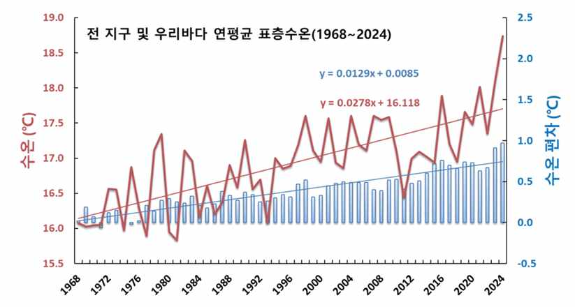
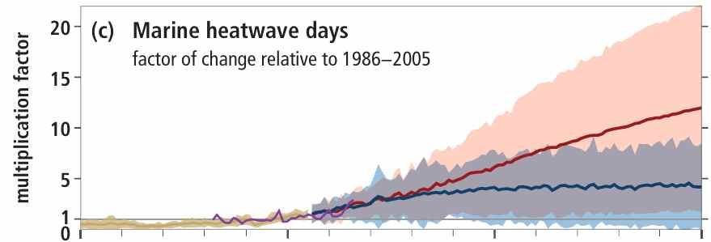
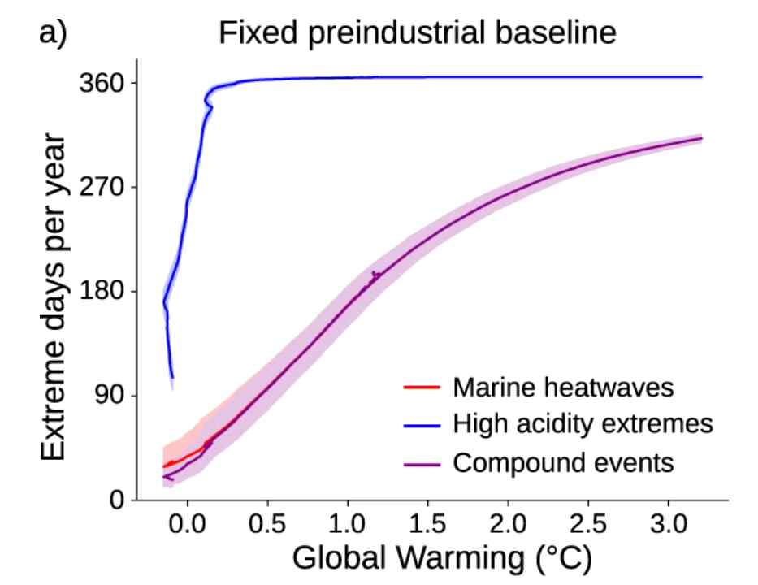
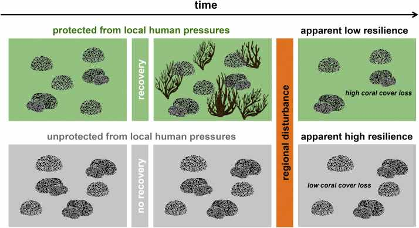
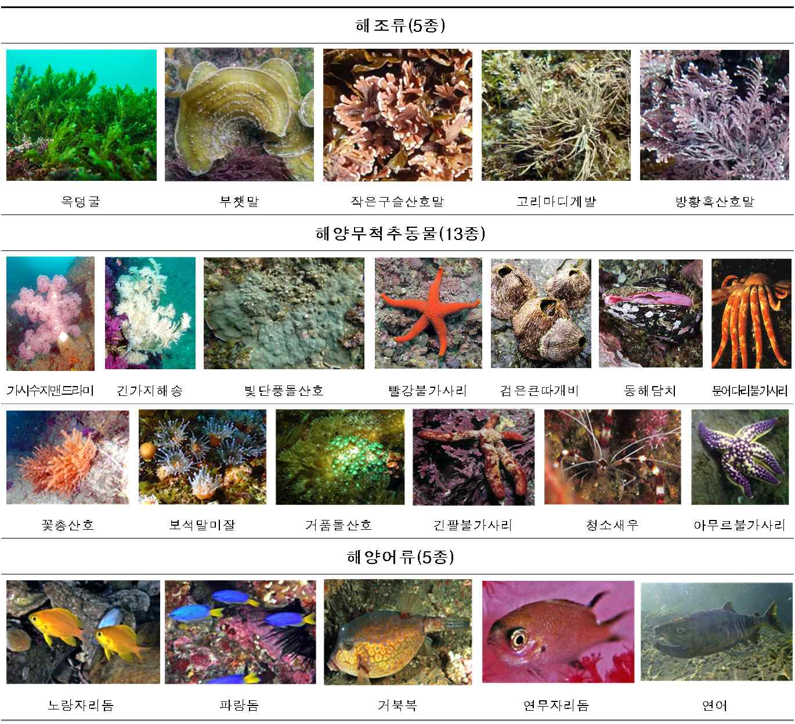
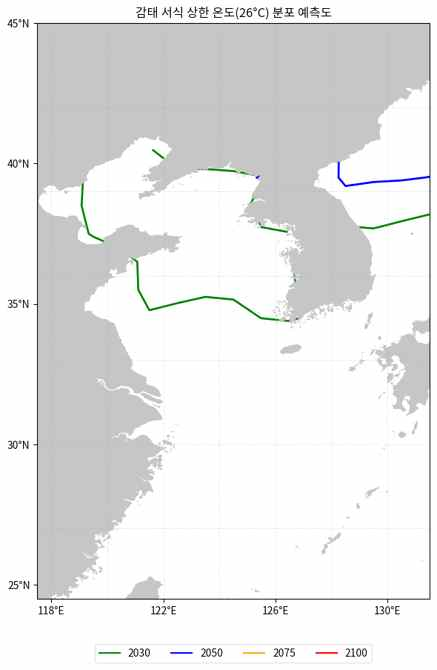
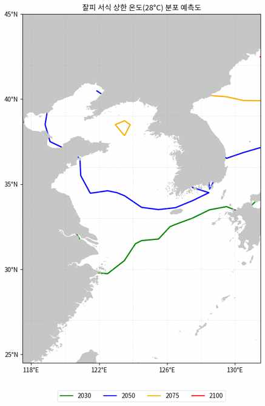

해양보호구역과 보호생물종의 기후변화 적응
제1절 기후위기와 해양보호구역
전 지구적으로 기후변화는 더 이상 미래의 위협이 아닌 현재의 위기로 다가왔다. IPCC 제6차 평가보고서에 따르면, 2011~2020년 기간 동안 지구 표면 온도는 산업화 이전(1850~1900년) 대비 약 1.09°C 상승하였으며, 2024년은 전 지구 기록상 가장 따뜻한 해로 기록되어 산업화 이전 대비 1.35°C 높은 기온을 나타내었다.
해양은 지구 온난화로 축적된 열의 90% 이상을 흡수하는 거대한 완충 시스템으로 작동하고 있으나, 이로 인해 해양 자체가 전례 없는 변화를 겪고 있다. 국립수산과학원 분석에 따르면 1968년부터 2024년까지 57년간 전 지구 표층 수온이 0.74°C 상승하는 동안 한반도 해역은 1.58°C나 상승하여 전 지구 평균의 2배 이상 빠른 속도로 온난화가 진행되고 있다. 해역별로는 동해가 2.04°C로 가장 높았고 서해 1.44°C, 남해 1.27°C 순이었으며, 이는 대마난류 세력 강화와 여름철 폭염에 따른 성층 강화가 복합적으로 작용한 결과로 분석된다.

수온 상승과 함께 해양열파(Marine Heatwave)의 빈도와 강도 역시 급격히 증가하고 있다. IPCC 해양 및 빙권 특별보고서(SROCC)에 따르면, 해양열파의 발생 빈도는 1982년 이후 2배로 증가하였으며 강도와 지속 기간도 함께 증가하고 있다. 지구 평균 기온이 산업화 이전 대비 2°C 상승할 경우 해양열파 발생 빈도는 현재의 20배에 달할 것으로 예측된다.

해양산성화 또한 해양생태계를 위협하는 주요 요인으로 부상하고 있다. 해양은 1980년대 이후 인간 활동으로 배출된 이산화탄소의 20~30%를 흡수해왔으며, 현재의 해양산성화 속도는 지난 300만 년 동안 유례가 없는 수준이다. 최근 연구에서는 해양열파와 해양산성화 극단 현상이 동시에 발생하는 복합 극단 현상(Compound Extreme)이 증가하고 있음이 밝혀졌으며, 이러한 복합 스트레스는 개별 스트레스보다 해양생물에 더 심각한 영향을 미치는 것으로 보고되고 있다(Gruber et al., 2022).

우리나라의 경우 2024년 여름 고수온 현상으로 인한 양식업 피해가 1,430억 원에 달해 관련 통계 집계(2012년) 이후 최대 피해액을 기록하였다. 고수온 특보는 2024년 7월 24일 발령되어 61일간 지속되었으며, 어류 수천만 마리와 멍게 등 패류가 대량 폐사하였다. 이처럼 수온 상승, 해양열파, 해양산성화, 용존산소 감소는 복합적으로 작용하여 해양생태계의 구조와 기능에 심대한 영향을 미치고 있으며, 수산업을 비롯한 연안지역사회의 생계와 삶의 질을 직접적으로 위협하고 있다.
이러한 기후위기 상황에서 해양보호구역(MPA: Marine Protected Area)은 해양생태계 보전과 기후변화 적응을 위한 핵심적인 정책 수단으로 주목받고 있다. 첫째, 보전 기능 측면에서 건강한 생태계를 유지함으로써 기후 스트레스에 대한 저항력(resistance)을 확보하는 데 기여한다. 둘째, 복원 기능 측면에서 잘피밭·해조류 숲·염습지 등 블루카본 생태계를 포함하는 MPA는 탄소 흡수·저장을 통해 기후변화 완화에도 기여할 수 있다. 셋째, 완충 기능 측면에서 종의 이동 경로와 피난처(refugia)를 제공한다. 최근 연구에 따르면 전 지구적으로 기후 피난처로 기능할 수 있는 해양기후 피난처의 면적은 약 1,760만 ㎢에 달하나, 현재 지정된 해양보호구역 중 기후 안정 구역에 위치한 비율은 29%에 불과하다.
그러나 해양보호구역이 만능 해결책은 아니라는 점도 인식할 필요가 있다. 일부 연구에서는 어획 등 인위적 압력으로부터의 보호가 오히려 온난화에 민감한 종의 선택을 초래할 수 있다는 ‘보호 역설(Protection Paradox)’을 지적하고 있다(Bates et al., 2019). 이는 기후변화가 해양생태계의 회복력을 압도하는 상황에서 탄소 배출 저감이 근본적인 해결책임을 시사하지만, 다양한 환경 조건을 포괄하는 MPA 네트워크는 여전히 중요한 적응 전략으로 평가된다.

현재 우리나라에는 습지보호지역 18개소, 해양생태계보호구역 17개소, 해양생물보호구역 3개소, 해양경관보호구역 1개소 등 총 39개소(총 면적 3,124.7㎢)의 해양보호구역이 지정되어 있다. 국제사회에서도 2022년 CBD COP15에서 채택된 쿤밍-몬트리올 글로벌 생물다양성 프레임워크(GBF)가 2030년까지 육상 및 해양의 최소 30%를 보호구역으로 지정하는 ‘30×30’ 목표를 설정하였다. 우리나라도 2030년까지 해양관할권의 30%를 해양보호구역으로 지정하겠다는 목표를 발표하였으나, 현재 지정 비율이 배타적경제수역(EEZ)의 약 1.8%에 불과하여 획기적인 노력이 요구된다.
기후변화 시대에 효과적인 관리를 위해서는 기존의 정적(static) 관리 방식에서 동적(dynamic) 적응관리 방식으로의 전환이 필수적이다. 전통적인 MPA 설계는 생물다양성 보전에 초점을 맞추었으나 기후 회복력을 명시적으로 고려하지 않았다는 한계가 있어, 종 분포 변화 예측·기후 피난처 식별·서식지 연결성 강화 등을 고려한 ‘기후 스마트(climate-smart)’ MPA 설계·관리가 필요하다.
제2절 보호생물종과 해양보호구역 관리
1. 해양보호생물 지정 현황
우리나라 해양보호생물 제도는 「해양생태계의 보전 및 관리에 관한 법률」에 근거하여 운영되며, 동법 제25조는 개체수가 현저히 감소하여 멸종위기에 처하거나 생태계 보전에 중요한 역할을 하는 생물을 해양보호생물로 지정·보호할 수 있도록 규정한다. 2024년 현재 해양수산부가 지정·관리하는 해양보호생물은 총 91종으로, 해양포유류 21종, 무척추동물 36종, 해조류·해초류 7종, 파충류 5종, 어류 6종, 조류 16종이 포함된다.
한편 해양수산부는 2023년 4월 ‘해양생태계 기후변화 지표종’ 23종을 별도로 지정·고시하였다. 이 지표종은 수온 상승에 따른 서식·분포범위 변화, 번식활동 시기 변화, 개체군 변화가 뚜렷하여 기후변화 모니터링에 적합한 생물로 선정되었으며, 해양어류 5종, 무척추동물 13종, 해조류 5종으로 구성된다. 기후변화 지표종 제도는 해양보호생물 제도와 별개로 운영되지만, 양 제도의 상호 연계를 통해 기후변화 대응형 보호생물 관리체계를 구축할 수 있는 잠재력을 지닌다.

2. 해양보호구역의 연계
해양보호구역(MPA)은 해양보호생물의 서식지를 공간적으로 보전하는 핵심 수단이다. 2015~2020년 시행된 국가 해양생태계 종합조사에서는 총 7,619종의 해양생물이 확인되었으며, 갯벌에 서식하는 대표 해양보호생물 8종의 분포 현황이 면밀히 파악되어 보호구역 후보지 발굴의 기초자료로 활용되고 있다. 2024년 발표된 ‘해양생물다양성 보전 대책’에 따르면 정부는 2030년까지 우리 해양의 30%를 해양보호구역으로 확대 지정하는 것을 목표로 설정하고, 해양포유류 서식처·주요 갯벌 등을 중심으로 1,000km² 이상의 대형 보호구역 지정을 추진하고 있다.
그러나 현행 제도에서 해양보호생물과 해양보호구역 간의 공간적 중첩·관리 연계 현황은 체계적으로 분석되지 못한 실정이다. 수온 상승에 따라 보호생물의 서식 적합 범위가 변화하면 기존 보호구역의 보전 효과가 감소할 수 있으므로, 서식지와 보호구역 경계의 정합성을 주기적으로 평가하고 기후변화 시나리오에 기반한 적응적 관리가 필요하다.
3. 관련 법령 연계
해양생태계 보전 관련 국내 법령은 해양생태계법 외에도 「자연공원법」, 「습지보전법」, 「야생생물 보호 및 관리에 관한 법률」 등이 있다. 문제는 이들 법령 간 보호대상 생물의 정의와 범위가 상이하다는 점이다. 환경부 소관 야생생물법은 ‘멸종위기 야생생물’을 I·II급으로 구분해 관리하는 반면, 해양수산부 소관 해양생태계법은 ‘해양보호생물’을 별도로 지정한다. 두 제도 간 중복 지정된 종(상괭이, 점박이물범 등)도 존재하지만 관리 주체와 규제 내용이 상이하여 현장에서의 통합적 보호 조치가 어려운 경우가 발생한다. 종합적 적응전략 수립을 위해서는 관계 부처 간 협력체계 강화와 법령 간 정합성 제고가 선행되어야 한다.
4. 기후변화 대응 연구 필요성
① 생리적 내성 범위 규명 — 해양변온동물은 산소공급 능력에 의해 열 내성이 제한되며, 육상 변온동물보다 상위 열 한계에 더 가깝게 생활하여 온난화 취약성이 높다(Pinsky et al., 2019). 국내 해양보호생물 88종에 대한 임계열최대·최소, 열적 안전역 연구가 필요하다.
② 서식지 적합성 변화 예측 모델링 — IPCC AR6은 해양생물이 온난단(warm edge)에서는 감소하고 한랭단(cool edge)에서는 확대되는 분포역 이동(range shift)을 보고하였다. 생리적 성능곡선을 통합한 생리-SDM 등 정교한 예측 도구를 활용한 연구가 요구된다.
③ 종별 취약성 평가 체계 구축 — 취약성은 노출(exposure)·민감도(sensitivity)·적응능력(adaptive capacity)의 함수로 정의되며, 지리적 분포 범위·열 내성·생활사 특성·먹이 특이성·이동성 등의 형질이 평가에 반영되어야 한다.
④ 적응전략 수립을 위한 과학적 근거 마련 — 서식지의 열적 편향(thermal bias)에 따라 군집의 취약성이 달라지므로, 보호생물 종별 기후변화 취약성에 대한 과학적 근거가 체계적으로 축적되어야 한다.
제1절 해외 연구 동향
1. 수온상승에 따른 해양보호종 및 서식지 변화 연구
1) 전 지구적 해양생물 분포 이동(poleward shift) 연구
산업화 이전 대비 해양 평균 수온이 약 1°C 상승함에 따라, 해양생물종들은 생리적 열적 내성 범위를 유지하기 위해 극방향(poleward)으로 이동하는 경향을 보인다. Hastings 등(2020)은 304종의 광역분포 해양생물을 분석하여, 분포역의 극방향 경계에서는 개체수가 증가하고 적도 방향에서는 감소하는 패턴을 확인하였다.
Poloczanska 등(2013)의 메타분석에 따르면 해양생물 분포역의 선행 경계는 10년당 평균 72±13.5km 속도로 극방향 이동하며, 이는 육상생물(10년당 평균 6km)의 약 12배에 달한다. 동물플랑크톤은 10년당 최대 231.6km까지 이동하는데, 이는 해양환경에 물리적 장벽이 적고 해양생물의 열적 내성 범위가 좁기 때문으로 해석된다. Pinsky 등(2020)은 수온·산소 농도의 시공간적 모자이크가 국지적 피난처(refugia)를 형성하며, 해양보호구역 내에서는 높은 종 다양성과 포식자 밀도가 침입종 정착을 억제하는 ‘생물적 저항(biotic resistance)’ 효과가 관찰됨을 보고하였다.
2) 열대화(tropicalization) 및 한대화(borealization) 사례
McLean 등(2021)은 북반구 어류 장기 모니터링 자료를 분석하여 군집온도지수(CTI) 변화를 열대화·한대화·탈열대화·탈한대화 네 과정으로 분해하였다. 난수성 종의 증가(열대화)가 가장 보편적으로 나타났으나 공간적 변이가 상당했다. Vergés 등(2014)은 서부경계류에 의해 형성된 온난화 핫스팟에서 열대성 초식어류의 온대 해역 침입과 해조류 군락 붕괴를 분석하였으며, 2011년 서호주 해양열파 이후 켈프숲이 광범위하게 소실되고 열대·아열대성 생물로 대체되는 ‘군집 수준의 열대화’가 관찰되었다(Wernberg et al., 2016). 유럽해역 연구는 40년간 1,817종·65개 시계열 자료 분석을 통해 난수성 종 증가(54%)와 냉수성 종 감소(18%)를 확인하였다(Chust et al., 2024).
3) MPA 네트워크 내 종 구성 변화 장기 모니터링
Bates 등(2019)은 MPA가 기후변화에 대한 ‘보호의 역설’에 직면해 있음을 제시하였다 — 어업 압력 등 국지적 스트레스 저감에는 효과적이나, 수온 상승이라는 전 지구적 스트레스에 대한 직접적 완충 효과는 제한적이다. 캘리포니아 PISCO 프로그램은 2007년부터 24개 조사지점에서 켈프숲을 모니터링하여 2014년 해양열파 전후 군집 구조 변화를 기록하였고, 호주 대보초에서는 AIMS의 장기모니터링 프로그램이 38년간 94개 암초에서 산호 피복도 변화를 추적하고 있다.
2. 생리적 임계온도·분포전이·군락붕괴 분석사례
1) 미국 — 황소켈프숲 붕괴
Rogers-Bennett와 Catton(2019)은 2014년 이후 북캘리포니아 350km 이상의 해안선에서 켈프 캐노피가 90% 이상 감소하고 자주성게 황폐지로 전환된 과정을 기록하였다. 2013년 해성병으로 인한 해바라기불가사리의 기능적 멸종, 2014~2016년 해양열파(‘The Blob’)와 엘니뇨에 의한 수온 상승·영양염 고갈이 복합적으로 작용해 생태계 회복력을 임계점 이하로 저하시켰다. 그 결과 세계 최대 규모였던 북캘리포니아 전복 휴양 어업이 2018년 폐쇄되었다(추정 가치 4,400만 달러). NOAA의 Coral Reef Watch 프로그램은 1997년부터 Degree Heating Week(DHW) 지표를 산출하여, 4°C-주에서 백화 위험, 20°C-주 이상에서 거의 완전한 폐사(80% 이상)를 예측한다.
2) 일본 — 이소야케(磯焼け)
일본에서는 해조 군락의 감소·소실로 인한 황폐지 형성을 ‘이소야케’로 지칭하며, 초식동물 섭식·고수온 고사·퇴적물에 의한 정착 억제 등 복합 요인으로 발생한다. Tanaka 등(2012)은 고치현 토사만 40년 자료 분석에서 연평균 SST가 10년당 0.3°C 증가하였으며, 1997~98년 엘니뇨 시기의 극단적 고수온이 광범위한 켈프 군락 파괴를 야기해 현재까지도 회복되지 않고 있음을 확인하였다. Takao 등(2015)은 RCP 8.5 시나리오 하에서 2090년대까지 감태(Ecklonia cava)의 적합 서식지가 현저히 북상·축소될 것으로 전망하였다.
3) EU — 지중해 포시도니아·냉수산호
지중해 고유 잘피인 포시도니아(Posidonia oceanica)는 알려진 분포 면적 약 1,224,707헥타르 중 과거 50년간 약 34%가 퇴행한 것으로 추정된다(Telesca et al., 2015). Chefaoui 등(2018)은 RCP 8.5 시나리오 하에서 포시도니아가 2050년까지 적합 서식지의 75%를 상실하고 2100년까지 기능적 멸종 위험에 처할 수 있다고 전망하였다. 대서양 냉수산호 생태계 또한 아라고나이트 포화 수심 상승으로 산호 골격 형성이 저해되어 해양 산성화에 특히 취약하며, EU의 ATLAS·iAtlantic 프로젝트가 관련 국제 협력 연구를 수행하고 있다.
4) 호주 — 대보초(GBR) 대규모 백화
대보초는 1998·2002·2016·2017·2020·2022·2024·2025년에 대규모 백화 사건을 경험하였으며, 이 중 2016년 이후 7회는 불과 10년 이내에 집중되었다. Hughes 등(2017)에 따르면 2016년 백화는 역사상 가장 극심하였고 북부 관리 구역의 산호 폐사율이 22%에 달했다. Hock 등(2021)은 2016·2017·2020년 백화로 대보초 전체 유생 공급량이 각각 26%, 50%, 71% 감소했다고 추정하였으며, 최근 AIMS 보고서는 2024년까지의 반복된 백화가 ‘회복의 창(window for recovery)’을 단축시키고 있다고 지적하였다.
3. 냉수성 해조·산호·잘피 복원사업 중심의 적응형 MPA 관리 연구
1) 기후 회복력 있는 종·유전형 선발(보조진화)
van Oppen 등(2015)은 산호의 기후 회복력 강화를 위한 ‘보조진화(assisted evolution)’ 전략으로 선발 육종, 스트레스 순화, 공생 조류 조작, 유전자 편집 등을 제안하였다. 호주 CSIRO·AIMS 연구팀은 15년 이상의 이식·교배 실험을 통해 북부의 자연적으로 더 따뜻한 암초 출신 산호가 고온에서 생존할 확률이 26배 높음을 확인하였으며, Quigley 등(2019)은 자연적인 유전자 흐름으로는 적응 형질이 확산되기까지 30세대 이상이 필요해 보조유전자흐름(AGF)이 필요함을 논증하였다.
2) 인공 서식지 조성 및 이식 기술
호주의 Reef Restoration and Adaptation Program(RRAP)은 대보초의 기후 회복력 강화를 위해 43개 중재 기술을 평가하였다. DeFilippo 등(2022)은 단순 보충 이식은 기후 회복력 이점이 제한적인 반면, 보조진화를 통해 열 내성을 3°C 향상시킨 산호를 도입할 경우 유의미한 개선이 가능함을 확인하였다. 켈프숲 복원에서도 성게 제거·분쇄, 켈프 종묘 이식, ‘성게 목장(urchin ranching)’ 등의 기술이 시도되고 있다.
3) MPA 내 복원 구역 설정 및 자연기반해법(NbS) 통합
미국 Greater Farallones National Marine Sanctuary는 북캘리포니아 켈프숲 붕괴에 대응해 이해관계자 참여형 복원 프로그램을 운영하며, 대보초해양공원은 용도구역(zoning) 체계 내에서 비용-효과성을 고려한 복원 투자를 진행하고 있다. Tittensor 등(2019)은 ‘정적 기반점’과 ‘동적 보전 요소’를 결합한 기후 회복력 있는 MPA 네트워크를 제안하였으며, 해조류·잘피·맹그로브·염습지 등 연안 서식지 복원은 탄소 격리·연안 보호·서식지 제공 등 다중 편익을 창출하는 대표적인 해양 NbS로 인식되고 있다.
제2절 기후적응형 MPA 정책 동향
1. IUCN, CBD, IOC-UNESCO의 30×30 및 적응형 관리 지침
2022년 12월 CBD COP15에서 채택된 쿤밍-몬트리올 글로벌 생물다양성 프레임워크(GBF)는 목표3(Target 3), 이른바 ‘30×30 목표’를 통해 2030년까지 전 세계 육상·연안·해양의 최소 30%를 효과적으로 보전·관리할 것을 요구한다. 현재 전 세계 해양의 약 8%만이 보호구역으로 지정되어 있어, 목표 달성을 위해서는 연간 프랑스 면적의 23.5배에 해당하는 MPA를 새로 지정해야 하는 실정이다.
IUCN 세계보호지역위원회(WCPA)는 2025년 「기후변화 시대의 MPA 설립」 기술보고서를 통해 ① 변화 이해, ② 적응과 회복력 강화, ③ 형평성과 포용성 확보, ④ 통합적 편익 창출의 네 원칙을 권고하였다. IOC-UNESCO는 EU DG MARE와 공동으로 ‘기후스마트 MSP(climate-smart Marine Spatial Planning)’ 개념을 제시하고, 블루카본 이니셔티브를 공동 주관하고 있다. CBD는 생태계 기반 적응(EbA)을 ‘생물다양성과 생태계 서비스를 활용해 기후변화 적응을 지원하는 것’으로 정의하며, MPA를 비용효과적인 ‘후회 없는(no-regret)’ 전략으로 평가한다.
2. 유럽연합(EU) — MSFD, Natura 2000 기반 MPA-기후통합정책
EU 해양전략기본지침(MSFD, 2008)은 생물다양성 등 11개 기술기준을 통해 ‘좋은 환경상태(GES)’ 달성을 목표로 하며, 최근 아열대 종의 지중해 유입 등 기후변화 요소를 명시적으로 다루고 있다. Natura 2000은 27개 회원국의 육상·해양을 포괄하는 EU 최대 보호구역 네트워크로, 2013년 「Natura 2000과 기후변화에 관한 가이드라인」을 통해 정태적 보전에서 적응적 관리로의 전환을 제시하였다.
2020년 채택된 ‘EU 생물다양성전략 2030’은 2030년까지 EU 해역의 30%를 법적으로 보호할 것을 목표로 하며, 해양 MPA 면적은 2012년 4.15%에서 2023년 13.7%로 확대되었으나 목표 달성을 위해서는 지정 속도의 가속화가 필요하다. 블루카본 생태계(맹그로브·잘피초원·염습지)는 전 세계적으로 약 4,900만 헥타르를 차지하며, 맹그로브 복원 1헥타르는 육상 산림 복원 대비 5배 이상의 완화 효과를, 잘피 복원은 3배, 염습지는 약 2배의 효과를 갖는 것으로 제시되고 있다.
제1절 MPA 관리 및 연구 현황
1. 국내 해양보호구역 현황
국내 해양보호구역은 근거 법률과 관리 목적에 따라 다양한 유형으로 지정·관리되고 있다. 「해양생태계법」에 따른 해양보호구역은 2024년 현재 총 33개소가 지정되어 있으며, 「습지보전법」에 따른 연안습지보호지역은 13개소(순천만, 무안갯벌, 서천갯벌, 신안갯벌 등, 이 중 서천·고창·신안·보성-순천 갯벌은 2021년 유네스코 세계자연유산 등재)이다. 「자연공원법」에 따른 해상·해안국립공원은 한려해상·다도해해상·태안해안·변산반도 4개소로 국내 해양 보호지역 중 가장 넓은 면적(약 2,754㎢)을 차지한다.
| 유형 | 개소 | 면적(㎢) | 근거법률 | 관리기관 |
|---|---|---|---|---|
| 해양보호구역 | 33 | 2,287 | 해양생태계법 | 해양수산부 |
| 연안습지보호지역 | 13 | 1,567 | 습지보전법 | 해양수산부 |
| 해상·해안국립공원 | 4 | 2,754 | 자연공원법 | 환경부(국립공원공단) |
| 합계 | 50 | 6,608 | – | – |
2024년 현재 국내 해양보호구역의 총 면적은 약 6,608㎢로 관할해역(약 443,838㎢) 대비 약 1.5% 수준이며, 해양보호구역만을 기준으로 하면 관할해역의 약 2.5%에 해당한다. 이는 GBF의 30×30 목표 달성을 위해서는 상당한 확대가 필요한 수준으로, 해양수산부는 「제3차 해양생태계 보전·관리 기본계획」(2024~2028)에서 2028년까지 관할해역의 5% 수준으로 확대하는 목표를 설정하였다.
해양보호구역의 지역별 분포는 서해안·남해안에 집중되어 있다(해양생태계법 기준 33개소 중 서해안 14개소, 남해안 12개소, 동해안 4개소, 제주 3개소). 이는 리아스식 해안, 풍부한 갯벌, 다도해 경관 등 생태·경관적 가치를 반영한 것이나, 동해안은 냉수성 고유 생물종의 보전 가치에도 불구하고 지정이 미흡해 기후변화에 따른 동해 생태계 변화 모니터링과 냉수성 종 피난처 보전을 위한 확대가 필요하다. 관리는 해양수산부(해양보호구역·연안습지보호지역), 환경부·국립공원공단(해상·해안국립공원), 지방자치단체(현장 관리)로 분담되어 있다.
2. 기후변화 관련 조사 및 정책 연계
해양수산부는 해양생태계법 제9조에 따라 해양생태계 기본조사를 실시하여 해양환경·해양생물·서식지 분포 정보를 수집하고 있으나, 현행 조사는 현황 파악 중심으로 설계되어 기후변화 지표 모니터링에는 한계가 있다. 해양환경공단은 전국 연안·근해 약 400여 개소에서 해양환경측정망을 운영하며 수온·염분·pH·용존산소 등 기후변화 관련 지표를 포함하고 있으나 측정 정점이 해양보호구역과 반드시 일치하지 않는다는 한계가 있다.
한국해양과학기술원(KIOST)은 수온 변화, 해양산성화, 해양열파 등 물리·화학적 환경 변화와 해양생물 분포 변화 연구를 수행해왔으나, 연구 결과가 실제 관리정책에 체계적으로 반영되는 환류 체계는 아직 미흡하다. 국립해양생물자원관은 보호대상해양생물 포털을 통해 80종의 분류학적·분포 정보를 제공하고 정밀조사를 수행하고 있으나, 분포 변화·개체군 동태를 추적하는 장기 모니터링 체계는 구축 초기 단계에 있다.
3. 보호생물종 서식지 모니터링 체계
보호대상해양생물의 서식지 모니터링은 해양수산부, 국립해양생물자원관, 국립수산과학원 등 여러 기관에서 분산적으로 수행되고 있다. 해양포유류는 목시·좌초 개체·음향 조사로, 바다거북류는 산란지·좌초·혼획 모니터링으로 현황을 파악하며, 해조류·해초류 서식지(감태, 잘피 등)는 수중 조사·드론 조사·위성영상 분석을 통해 분포 면적과 피도를 측정한다. 대부분의 서식지 모니터링은 연 1~2회 실시된다.
현행 체계에서 기후변화 관련 지표는 제한적으로만 포함되어 있어 장기적 변화 추세 파악이 어렵다. 서식지 환경 지표(수온·염분·용존산소·pH 연속 측정), 생물 반응 지표(분포역 경계 변화, 출현 시기 변화, 번식 성공률 등), 서식지 상태 지표(백화, 갯녹음, 잘피 쇠퇴 등)가 체계적으로 포함되어야 하며, 특히 열대화 지표종·냉수성 종에 대한 집중 모니터링 체계가 부재하다. 또한 모니터링 데이터가 기관별로 개별 관리되고 있어 데이터 표준화와 통합 활용, 공개 확대가 필요하다.
제2절 관리정책 및 제도
1. 관련 계획 및 정책
「제4차 해양수산부문 기후변화 대응 종합계획」(2022~2026)은 ‘해양수산 탄소중립 대전환과 기후위기 대비태세 완비’를 비전으로, 2030년 해양수산분야 온실가스 70% 저감(2018년 대비)을 목표로 한다. 전략 2(온실가스 흡수·전환)는 갯벌 식생을 2030년까지 105㎢, 바다숲을 2030년 540㎢로 확대하며, 전략 3(선제적 대응)은 연안재해 조기 예·경보 시스템(K-Ocean Watch)을 2030년까지 구축할 계획이다.
「제2차 해양생태계 보전·관리 기본계획」(2019~2028)은 ‘건강한 해양생태계를 통한 미래가치 창출’을 비전으로, 서천·고창·신안·보성·순천 갯벌 등 세계자연유산 지역을 포함해 37개소(약 1,976㎢)의 습지보호지역을 관리하며 「(가칭)해양보호구역법」 제정을 통한 관리체계 재정비를 추진하고 있다. 「탄소중립·녹색성장 국가전략 및 제1차 국가 기본계획」(2023~2042)은 갯벌 복원을 2022년 1.5㎢에서 2050년 30㎢로 확대할 계획이다. 또한 해양공간관리계획의 ‘환경·생태계관리구역’은 MPA를 포함한 보전 해역을 지정·관리하는 기능을 수행하여 공간적 정합성 확보에 기여하고 있다.
2. 현행 MPA 관리체계의 한계와 개선 필요성
① 고정된 경계 기반 관리의 한계 — 수온 상승에 따른 보호대상종의 극방향 이동에 대한 대응이 부족하고, 신규 서식지 출현·기존 서식지 소멸에 대한 경계 조정 메커니즘이 부재하다. 동적 경계(dynamic boundaries) 개념 도입과 MPA 네트워크를 통한 생태적 연결성 확보가 필요하다.
② 기후변화 요소의 관리계획 반영 미흡 — MPA별 기후변화 취약성 평가·모니터링 체계가 부재하며, 중장기 관리목표 설정이 부족하다. 취약성 평가 체계 구축과 기후변화 지표종 모니터링·조기경보체계가 필요하다.
③ 부처 간·기관 간 분절적 관리 구조 — 해양수산부·환경부·지자체가 상이한 법적 근거로 유사 목적의 보호구역을 운영하고 있어, 「(가칭)해양보호구역법」 제정을 통한 관리체계 일원화와 범부처 협의체 구성이 필요하다.
④ 과학적 근거 기반 적응적 관리 체계 부재 — 모니터링-평가-환류로 이어지는 정책순환체계가 미흡하다. MPA 관리효과성 평가(PAME) 체계 구축과 5년 주기 관리계획 검토·수정 절차의 제도화가 필요하다.
⑤ 지역사회 참여 및 거버넌스 강화 필요성 — 지역주민의 참여 기회·인센티브가 부족하다. 지역관리위원회 활성화, 주민참여형 시민과학 프로그램 확대, 생태계서비스 지불제 도입이 필요하다.
제1절 2050·2100년 수온변화 전망
1. CMIP6 기반 SSP 시나리오별 한반도 연근해 수온상승 예측
기상청은 국립기상과학원이 개발한 전지구 기후변화 예측모델(K-ACE)을 약 100km 해상도로 생산한 후, 연세대·강릉원주대와의 공동연구를 통해 약 8km 해상도로 상세화한 고해상도 해양 기후변화 시나리오를 기반으로 2100년까지 한반도 주변 해역의 미래 수온 변화를 전망하였다(기상청, 2024.12.26.). 이 전망자료는 IPCC AR6의 SSP 시나리오를 적용하여 해수면온도·연직 수온 구조·해수면높이·염분 등 주요 변수의 21세기 중·후반까지의 변화를 체계적으로 제시한다.
| 시나리오 | 2050년 | 2100년 | 비고 |
|---|---|---|---|
| SSP1-2.6 (저탄소) | +1.0~1.2℃ | +1.5~2.0℃ | 2050년 이후 안정화 |
| SSP2-4.5 (중간) | +1.4~2.2℃ | +2.5~3.5℃ | 완만한 상승 지속 |
| SSP5-8.5 (고탄소) | +1.5~2.5℃ | +3.9~4.5℃ | 급격한 상승 지속 |
국립수산과학원의 정선해양관측 자료에 따르면 지난 56년간(1968~2024년) 표층 수온 상승 폭은 동해 약 1.90℃로 가장 높았고 서해 1.27℃, 남해 1.15℃ 순이었다. 동해의 상승은 수온 극전선의 북상과 대마난류 세기 강화가 주요 요인으로 지목된다. 연직 평균 수온 상승률은 서해가 약 0.04℃/년으로 가장 높은데, 이는 수심이 얕고 반폐쇄적인 지형에서 태양 복사 에너지 흡수·전달이 빠르기 때문이다.
해역별로는 서해가 해수면온도(약 4.5℃ 상승)와 표층 염분 변화폭(서해중부 1.70psu 감소)이 가장 크고, 동해는 해수면높이 상승폭(동해남부 0.58m)이 가장 크며, 남해는 3.9~4.2℃ 상승, 제주는 쿠로시오 난류의 직접적 영향으로 변동성이 크다(여름철 수온 30℃ 돌파 사례 빈발). 기상청 분석 결과, 고탄소 시나리오(SSP5-8.5)에서 21세기 말 해양열파 발생일수는 연평균 약 295일, 발생 강도는 약 2.54℃ 증가할 것으로 전망되며, 이는 연중 대부분 기간 동안 한반도 연근해가 고수온 스트레스에 노출될 가능성을 시사한다. 서울대 조양기 교수 연구팀은 2050 탄소중립을 달성하더라도 해양열파 발생 빈도가 현재 대비 2~4배 증가할 수 있음을 제시하였다(Cho et al., 2024).
2. 주요 MPA 해역별 해수온 경향
1) 동해 MPA — 취약성 1위
동해는 표층 수온 상승 폭(56년간 +1.90℃)이 전국에서 가장 커 취약성이 가장 높은 해역으로 평가된다. 21세기 말 해수면온도는 약 4.5℃, 해수면높이는 약 0.56~0.58m 상승할 것으로 예측되며, 장기 해양열파의 빈발로 오징어·명태 등 한대성·냉수성 어종의 서식 적합성이 급격히 저하되고 어장 북상과 자원 감소가 동시에 발생할 가능성이 높다.
2) 남해 MPA — 취약성 4위
남해는 상대적으로 완만한 수온 상승(21세기 말 3.9~4.2℃)을 보이나 아열대성 어종 출현이 지속적으로 증가하고 있다. 양식업이 집중된 해역으로 고수온에 따른 성장 저하·대량 폐사가 반복적으로 보고되어, 생태계 보전과 수산업 피해 저감을 함께 고려한 통합적 관리가 요구된다.
3) 서해 MPA — 취약성 3위
서해는 연직 평균 수온 상승률과 표층 염분 변화 폭이 전국에서 가장 크며, 21세기 말 해수면온도는 약 4.5℃ 상승할 것으로 전망된다. 갯벌 생태계와 염습지, 저서생물 군집은 탄소 흡수·수질 정화·서식지 제공 기능을 담당하는 만큼 수온·염분 변화에 대한 민감도가 높아 정밀 모니터링과 적응적 관리가 필수적이다.
4) 제주 MPA — 취약성 2위
제주 해역은 쿠로시오 난류의 직접적 영향을 받는 기후변화 최전선(frontline)으로, 최근 시민과학 기반 모니터링을 통해 고수온에 따른 연산호 이상폐사가 실제로 확인되었다(녹색연합, 2022). 갯녹음(바다사막화)이 확산되며 해조류 숲이 감소하고 열대·아열대성 경산호·어종의 출현이 증가하고 있어, 기후변화 적응형 MPA 관리 모델을 실험·적용할 핵심 사례 지역으로 정책적 중요성이 크다.
| 해역 | 표층수온 상승(56년) | 2100년 수온상승 | 해양열파·생태계 영향 | 종합 순위 |
|---|---|---|---|---|
| 동해 | +1.90℃ | +4.5℃ | 한대성 종 급감, 생태계 구조 변화 | 1위(최상) |
| 제주 | +3.0℃* | +4.0℃ 이상 | 연산호 폐사, 갯녹음 확산 | 2위(상) |
| 서해 | +1.27℃ | +4.5℃ | 갯벌·저서생물 군집 변화 | 3위(중상) |
| 남해 | +1.15℃ | +3.9~4.2℃ | 아열대화, 양식 피해 증가 | 4위(중) |
제2절 보호생물종별 수온변화 영향
본 절에서는 보호대상해양생물 중 수온 변화에 민감하고 생태적·경제적 중요성이 높은 감태(Ecklonia cava), 잘피(Zostera marina), 전복(Haliotis discus hannai)을 대상으로 기후변화 영향을 분석하였다. 이들은 각각 해조류·해초류·무척추동물을 대표하는 보호대상해양생물이자 해양생태계의 핵심 서식지 형성종(habitat-forming species)이다.
1. 종별 생태적 특성 및 온도 민감도
1) 감태(Ecklonia cava)
감태는 다시마목에 속하는 대형 갈조류로, 한반도 남해안·제주도 연안 암반 해역에서 울창한 해중림(kelp forest)을 형성하며 다양한 해양생물의 서식지·산란장·피난처이자 블루카본 흡수원으로 기능한다. 최적 생장 온도는 12~18℃이며 24℃를 초과하면 광합성 효율이 급격히 저하되고 성장이 정지된다. 26℃ 이상의 고수온이 지속되면 엽체 탈락·부착기 약화·폐사가 발생하여 서식 상한 온도는 26℃로 설정된다. 최근 한반도 연안에서는 수온 상승과 함께 감태 군락 감소와 갯녹음(백화) 현상이 확산되고 있다.

2) 잘피(Zostera marina)
잘피는 거머리말속 해초류로 연안 연성저질에서 잘피밭(seagrass bed)을 형성해 어류·갑각류·패류의 서식지·산란장, 연안 침식 방지, 수질 정화, 블루카본 저장 등 다양한 서비스를 제공한다. 최적 생장 온도는 15~23℃로 감태보다 고수온 내성이 다소 높으나, 26℃ 초과 시 광합성 효율이 저하되고 28℃ 이상에서는 성장이 급격히 감소하며 폐사가 발생해 서식 상한 온도는 28℃로 설정된다.

3) 전복(Haliotis discus hannai)
전복(참전복)은 한반도 연안 암반 해역에 서식하는 대형 복족류로, 감태·미역 등 대형 해조류를 주요 먹이로 한다. 최적 생장 온도는 16~22℃이며 24℃ 이상에서 섭이량 감소·성장 저하가 나타나고 26℃ 이상 고수온이 수일간 지속되면 대량 폐사가 발생하여 서식 상한 온도는 26℃로 설정된다. 여름철 해양열파 발생 시 양식장의 대량 폐사 사례가 빈번하며, 먹이원인 해조류 군락 감소는 전복 서식에 이중적 위협 요인이 된다.
| 종명 | 최적 생장 온도 | 성장 저하 온도 | 서식 상한 온도 |
|---|---|---|---|
| 감태 | 12~18℃ | ≥24℃ | 26℃ |
| 잘피 | 15~23℃ | ≥26℃ | 28℃ |
| 전복 | 16~22℃ | ≥24℃ | 26℃ |
2. SSP5-8.5 시나리오 기반 서식 적합 해역 변화 전망
IPCC AR6의 SSP5-8.5 시나리오와 CMIP6 앙상블 모델을 활용하여 연도별(2030·2050·2075·2100년) 표층수온(SST) 영역평균 최난월(8월)을 산출하고, 종별 서식 상한 온도 도달 해역을 도출하였다.
감태는 2030년에 이미 서해 중부 이남·남해 전역·동해 남부에서 서식 상한 온도(26℃)에 도달하고, 2050년에는 동해 중부(약 38°N)까지, 2100년에는 동해 북부를 제외한 대부분 해역에서 서식이 어려워질 것으로 전망된다. 감태는 암반 서식 특성상 이동성이 제한적이어서 분포 이동보다 군락 소실 가능성이 높다.
잘피는 2030년 제주도 남부·남해 일부에서 서식 상한 온도(28℃)에 도달하고, 2050년 서해 남부·남해 전역·동해 남부(약 35°N), 2075년 동해 중부(약 40°N)까지 확대되며, 2100년에는 동해 최북단을 제외한 대부분 해역에서 서식이 어려워진다. 잘피는 감태보다 고수온 내성이 다소 높아 감소 속도가 상대적으로 완만하다.
전복은 서식 상한 온도(26℃)가 감태와 동일하여 변화 양상이 유사하다. 고수온에 의한 직접적 생리 스트레스와 함께 먹이 자원(해조류) 감소로 인한 간접적 영향이 복합적으로 작용할 것으로 예상된다.
| 종명 | 2030년 | 2050년 | 2075년 | 2100년 |
|---|---|---|---|---|
| 감태 | 서해 중남부·남해·동해남부 상한 도달 | 동해 중부(38°N)까지 확대 | 동해 북부 일부만 적합 | 대부분 해역 부적합 |
| 잘피 | 제주·남해 일부 상한 도달 | 서해 남부·남해·동해남부(35°N) 확대 | 동해 중부(40°N)까지 확대 | 동해 최북단 외 부적합 |
| 전복 | 서해 중남부·남해·동해남부 상한 도달 | 동해 중부(38°N)까지 확대 | 동해 북부 일부만 적합 | 대부분 해역 부적합 |
3. 종합 평가 및 관리 시사점
① 보호구역 재검토 필요 — 현재 보호 대상 종의 서식지를 중심으로 지정된 MPA가 미래에는 서식 적합 해역에서 벗어날 수 있어, 고정된 경계 기반 보호구역이 보전 목표를 상실할 위험이 있다.
② 보호구역 네트워크 재설계 — 북쪽 또는 깊은 수심의 기후 피난처(climate refugia)를 파악해 선제적으로 보호구역화해야 하며, 특히 동해안 냉수대 해역은 온대성 보호생물종의 잠재적 피난처로 보전 가치가 높다.
③ 서식지 형성종의 보전·복원 — 감태·잘피 등 서식지 형성종의 보전·복원은 생태계 전체의 기후 회복력 강화와 블루카본 흡수원 확보에 함께 기여하므로 기후적응형 MPA 관리의 핵심 과제로 추진되어야 한다.
④ 선제적 적응 조치의 시급성 — 본 분석은 고배출(SSP5-8.5) 시나리오를 기반으로 하여 감축 노력에 따라 실제 영향은 달라질 수 있으나, 이미 진행 중인 온난화와 해양의 열 관성을 고려할 때 2030년경부터 나타나는 영향에 대비한 선제적 조치가 지금부터 필요하다.
본 장에서는 앞서 분석한 기후변화 영향 전망을 바탕으로 보호생물종과 해양보호구역의 기후적응 방향을 제시한다. 기후변화 적응은 부정적 영향을 최소화하고 기회를 활용하기 위한 조정 과정으로서, 생태계와 인간 시스템 모두에 적용된다. 제1절에서는 감태·잘피·전복 등 주요 보호생물종의 적응 전략을, 제2절에서는 해양보호구역 차원의 통합 적응관리체계를 다룬다.
제1절 보호생물종 중심의 기후적응 전략
1. 보호생물종별 영향 및 대응 전략
1) 감태(Ecklonia cava) 적응 전략
감태는 수온 26℃ 이상에서 생존이 어려워지는 냉수성 대형 갈조류로 가장 취약한 보호생물종 중 하나이다. 2030년경부터 현재 주요 서식지에서 서식 상한 온도에 도달할 것으로 전망되어 다층적 적응 전략이 필요하다. ① 기후 피난처(climate refugia) 확보 — 동해안 북부, 깊은 수심대(15~25m), 용승류 영향 해역을 보호구역으로 지정·확대한다. ② 고수온 내성 개체군 보전 — 자연 개체군 내 내성이 높은 개체·지역군을 파악해 복원 사업의 종묘 공급원으로 활용한다. ③ 복합 스트레스 저감 — 성게류 등 초식동물의 과다 증가로 인한 갯녹음 압력을 관리하여 군락의 전반적 회복력을 높인다.
2) 잘피(Zostera marina) 적응 전략
잘피는 서식 상한(28℃)이 감태보다 다소 높으나 금세기 후반에는 대부분 해역에서 서식이 어려워질 전망이다. ① 기존 잘피밭 건강성 강화 — 수질 개선, 퇴적 환경 관리, 선박 앵커링 규제 등으로 비기후적 스트레스를 최소화한다. ② 서식지 연결성 확보 — 분절된 잘피밭 간 연결성을 높여 유전자 흐름을 촉진하고 해양공간계획과 연계한 네트워크를 구축한다. ③ 대체 서식지 확보 — 북쪽 해역·하구역 등 잠재 적합 해역을 파악하되, 이식은 생태적 영향을 신중히 평가한 후 시행한다.
3) 전복(Haliotis discus hannai) 적응 전략
전복은 26℃ 이상에서 대량 폐사가 발생할 수 있으며, 먹이원 감소라는 이중 위협에 직면해 있다. ① 먹이 서식지 동시 보전 — 전복 서식지와 감태·다시마 등 먹이원 해조류 서식지를 통합 관리하고 바다숲 조성 사업과 연계한다. ② 심해 피난처 활용 — 수심 15~20m 이상의 상대적으로 수온이 낮은 암반 해역의 보전 우선순위를 높인다. ③ 조기경보 및 긴급 대응 체계 구축 — 실시간 수온 모니터링과 고수온 경보 발령 시 수심 이동·차광막 설치·냉각수 공급 등 긴급 조치를 지원한다.
| 종명 | 핵심 취약성 | 주요 적응 전략 |
|---|---|---|
| 감태 | 26℃ 이상 고사, 이동성 제한, 갯녹음 압력 | ① 기후 피난처 확보(동해북부·심해대) ② 내성 개체군 보전 ③ 복합 스트레스 저감(성게 관리 등) |
| 잘피 | 28℃ 이상 성장 정지, 퇴적환경 의존, 분절화 | ① 기존 잘피밭 건강성 강화 ② 서식지 연결성 확보 ③ 대체 서식지 확보(북쪽 해역) |
| 전복 | 26℃ 이상 폐사, 먹이(해조류) 감소, 열파 취약 | ① 먹이 서식지 동시 보전 ② 심해 피난처 활용 ③ 조기경보·긴급대응 체계 구축 |
2. 복원 및 서식지 관리 기술
1) 해중림(감태) 복원 기술
① 고수온 내성 종묘 개발 — 유전자 마커를 활용한 내성 개체 선별과 스트레스 테스트를 통한 우량 종묘 선발. ② 기후 적합 해역 우선 복원 — SSP 시나리오별 서식 적합성 모델링을 활용해 복원 성공 가능성이 높은 해역에 자원을 집중. ③ 녹색자갈(green gravel) 기법 도입 — 종묘를 부착시킨 자갈을 해저에 살포해 조류에 의한 유실을 방지하고 다양한 수심·지형에 적용한다.
2) 잘피밭 복원 기술
① 유전적 다양성 확보 — 다양한 지역 개체군에서 종자를 수집하고 고수온 내성 개체를 우선 활용한다. ② 대규모 종자 살포 기법 — 묘목 이식보다 비용 효율적이며 자연 선택을 통한 현지 적합 개체 정착을 돕는다. ③ 퇴적 환경 사전 개선 — 적정 입도의 저질 조성, 오염 퇴적물 제거, 수류 환경 개선을 시행한다.
3) 전복 서식지 관리 기술
① 인공어초와 해조류 복합 조성 — 수온 변화에 따른 피난 공간(깊은 틈새, 차광 구조물)을 고려해 설계한다. ② 심해대 서식 환경 보전 — 15~20m 이상 수심 암반 환경에서 저인망 어업·준설·해양투기를 제한한다. ③ 치패 방류와 자원 관리 연계 — 수온이 낮아지는 가을철에, 기후 적합성이 유지될 해역에 우선 방류한다.
3. 적응형 모니터링 시스템 구축
① 기후변화 지표 중심 모니터링 체계. 주요 해양보호구역에 자동 관측 부이·수중 센서를 설치해 수온·염분·pH·용존산소 등을 실시간 수집하고 해양열파 등 극한 사건을 신속히 탐지한다. 보호생물종의 분포역 경계 변화, 출현 시기 변화(phenology), 번식 성공률 등 생물 반응 지표와 해중림 피도·갯녹음 진행·잘피밭 면적 등 서식지 상태 지표를 원격탐사 기술을 활용해 정기적으로 측정한다.
② 조기경보 시스템 구축. 실시간 수온 모니터링과 기상 예보를 연계해 해양열파 발생을 사전에 예측하며, 관심(수온 상승 감지)→주의(서식 상한 접근)→경계(상한 도달)→심각(장기 지속·폐사 발생)의 단계별 경보 체계를 갖추어야 한다.
③ 시민과학 프로그램 연계. 스쿠버 다이버, 낚시인, 해녀 등 해양 이용자가 보호생물종 목격 정보와 이상 현상(대량 폐사, 이상 출현)을 보고하는 시스템을 구축하고, 표준화된 관찰 프로토콜과 전문가 검토 과정을 통해 데이터 품질을 관리하여 공식 모니터링 데이터와 통합·분석한다.
제2절 해양생태계서비스 기반의 통합적 기후적응 전략
해양생태계서비스는 해양 생태계가 인간 사회에 제공하는 조절·지지·공급·문화서비스를 포괄하는 개념으로, 해양보호구역을 중심으로 이를 체계적으로 관리·활용하면 보호생물종 중심의 기후적응 전략을 공간적·기능적·사회적 차원으로 확장할 수 있다.
1) 조절서비스 — 기후위험 완충 기능의 활용
갯벌·염습지·해조류 숲·산호 군락은 해수면 상승과 파랑, 고수온 현상에 대한 자연적 완충 기능을 제공한다. 서·남해 갯벌과 염습지는 퇴적물 공급 체계 유지, 육상 유입 오염원 관리 등 기능 중심 관리로 전환할 필요가 있으며, 동해·제주의 해조류 숲과 산호 군락에 대한 복원 사업은 단기적 훼손 복구를 넘어 기후위험 완화를 목적으로 설계되어야 한다.
2) 지지서비스 — 생태계 회복탄력성 유지
지지서비스는 서식지 제공과 생물다양성 유지를 통해 생태계의 구조적 안정성을 유지하는 기능이다. 해양보호구역은 종 이동과 생태계 재편이 자연스럽게 이루어질 수 있도록 지원하는 공간으로 기능해야 하며, 이를 위해 보호구역 간 공간적 연결성 강화와 기후 피난처 기능을 갖는 보호구역의 전략적 관리가 필요하다.
3) 공급서비스 — 생계·산업 기반 안정화
기후변화로 인한 종 조성 변화가 불가피한 상황에서, 남해·동해에서는 대체 종 도입, 양식 방식 전환, 어업 시기·방법 조정 등을 통해 공급서비스의 지속성을 확보할 수 있다. 이는 생태계 보전과 지역사회 생계 안정을 동시에 달성할 수 있음을 보여준다.
4) 문화서비스 — 사회적 수용성과 참여 강화
제주·남해에서는 생태관광, 해양치유, 시민과학 프로그램을 통해 지역사회 참여를 확대하고 보호구역 관리에 대한 사회적 수용성을 제고할 수 있다. 이는 장기적으로 기후적응 정책의 지속가능성을 높이는 중요한 수단이다.
해양생태계서비스 기반 기후적응 전략은 보호생물종 중심의 전략을 대체하는 것이 아니라 이를 공간적·기능적·사회적 차원으로 확장하는 보완적 접근이다. 보호생물종은 관리의 핵심 초점으로, 해양생태계서비스는 적응 전략의 실행 틀로 작용함으로써 해양보호구역의 기후변화 대응 역량을 종합적으로 강화한다.
참고문헌
국내 문헌
경향신문. (2025.4.24.). 한반도 해역 수온, 지구 평균보다 2배 상승…수산 생태계·자원 악화 뚜렷.
국립수산과학원. (2025). 2025 해양수산분야 기후변화 영향 브리핑 북. 해양수산부.
국립수산과학원. (2024.9.11.). 2024 수산분야 기후변화 영향 및 연구보고서.
국립수산과학원. (2022). 기후변화에 따른 갯녹음 확산 현황 및 전망.
국립해양생물자원관. (2023). 보호대상해양생물 정밀조사 보고서.
국립해양생물자원관. (2024). 해양생물다양성 정보시스템 운영 현황.
기상청. (2024.12.26.). 뜨거워지는 우리 바다, 21세기 말 해양기후 급격히 변한다. 보도자료.
한국해양과학기술원. (2022). 한반도 주변해역 수온 변화 분석. Ocean and Polar Research, 44(3), 189-205.
한국해양과학기술원. (2023). 기후변화에 따른 한반도 주변해역 해양환경 변화 연구.
해양수산부. (2024). 고수온 위기경보 발령 및 양식업 피해 현황. 보도자료.
해양수산부. (2023). 해양생태계 기후변화 지표종 23종 지정. 보도자료(2023.4.21.).
해양수산부. (2024). 해양보호생물(91종) 지정 현황.
해양수산부. (2024). 해양생물다양성 보전 대책.
해양수산부. (2023). 제3차 해양생태계 보전·관리 기본계획(2024-2028).
해양수산부. (2022). 제4차 기후변화대응 해양수산부문 종합계획(2022-2026).
해양환경공단. (2024). 해양보호구역 관리 현황. koem.or.kr
환경부. (2024). 2024년 습지보호지역 현황.
녹색연합. (2022.11.22.). 제주바다 산호서식지 모니터링 결과. 보도자료.
성재훈. (2022). 영국의 제3차 기후위험 평가와 시사점. 한국농촌경제연구원.
관계부처합동. (2020). 제3차 국가 기후변화 적응대책(2021-2025).
국외 문헌
Bates, A. E. et al. (2019). Climate resilience in marine protected areas and the ‘Protection Paradox’. Biological Conservation, 236, 305-314.
CBD. (2022). Kunming-Montreal Global Biodiversity Framework. Decision 15/4, COP15.
Chust, G. et al. (2024). Cross-basin and cross-taxa patterns of marine community tropicalization and deborealization in warming European seas. Nature Communications, 15, 2170.
Gruber, N., Boyd, P. W., Frölicher, T. L., & Vogt, M. (2022). Compound marine heatwaves and ocean acidity extremes. Nature Communications, 13, 4722.
Hastings, R.A. et al. (2020). Climate Change Drives Poleward Increases and Equatorward Declines in Marine Species. Current Biology, 30(8), 1572-1577.
Hock, K. et al. (2021). Cumulative bleaching undermines systemic resilience of the Great Barrier Reef. Current Biology, 31(23), 5385-5392.
Hughes, T.P. et al. (2017). Global warming and recurrent mass bleaching of corals. Nature, 543, 373-377.
IPCC. (2019). Special Report on the Ocean and Cryosphere in a Changing Climate (SROCC).
IPCC. (2021). Climate Change 2021: The Physical Science Basis. Cambridge University Press.
IPCC. (2022). Climate Change 2022: Impacts, Adaptation and Vulnerability. Cambridge University Press.
IUCN. (2025). Establishing Marine Protected Areas in a Changing Climate. WCPA Technical Report.
McLean, M. et al. (2021). Disentangling tropicalization and deborealization in marine ecosystems under climate change. Current Biology, 31(21), 4817-4823.
NOAA. (2025). Climate Change: Global Temperature. National Centers for Environmental Information.
Pinsky, M.L. et al. (2019). Greater vulnerability to warming of marine versus terrestrial ectotherms. Nature, 569, 108-111.
Pinsky, M.L. et al. (2020). Climate-Driven Shifts in Marine Species Ranges. Annual Review of Marine Science, 12, 153-179.
Poloczanska, E.S. et al. (2013). Global imprint of climate change on marine life. Nature Climate Change, 3, 919-925.
Quigley, K.M. et al. (2019). The active spread of adaptive variation for reef resilience. Ecology and Evolution, 9(19), 11122-11135.
Telesca, L. et al. (2015). Seagrass meadows (Posidonia oceanica) distribution and trajectories of change. Scientific Reports, 5, 12505.
Tittensor, D.P. et al. (2019). Integrating climate adaptation and biodiversity conservation in the global ocean. Science Advances, 5(11), eaay9969.
van Oppen, M.J.H. et al. (2015). Building coral reef resilience through assisted evolution. PNAS, 112(8), 2307-2313.
Vergés, A. et al. (2014). The tropicalization of temperate marine ecosystems. Proceedings of the Royal Society B, 281(1789), 20140846.
Wernberg, T. et al. (2016). Climate-driven regime shift of a temperate marine ecosystem. Science, 353(6295), 169-172.
Zhuang, H. et al. (2025). Identifying global marine climate refugia through a conservative approach to ocean biodiversity preservation. Nature Communications.